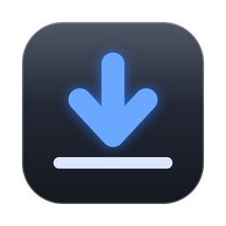
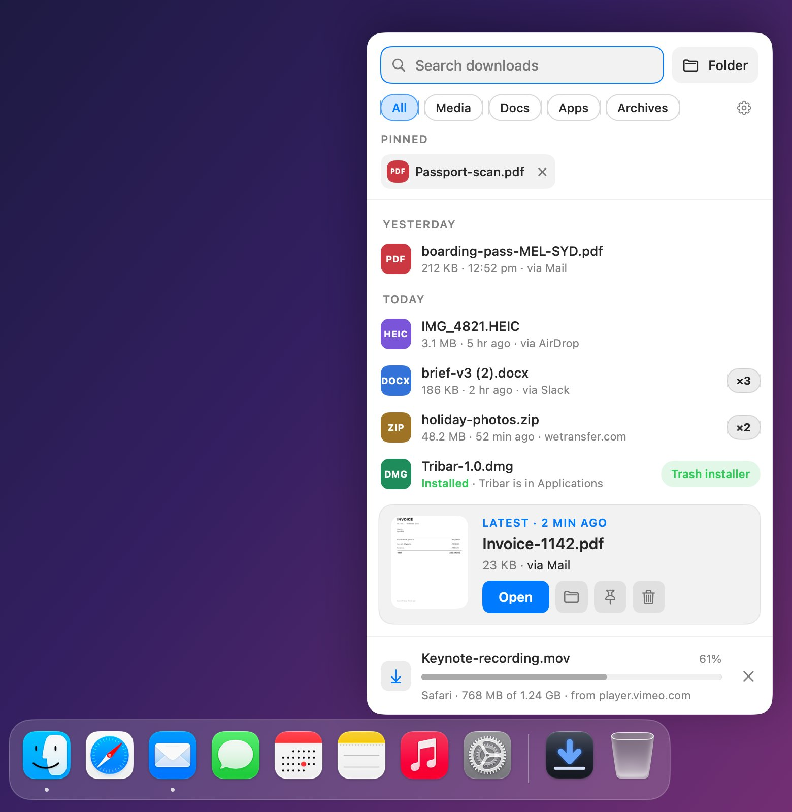
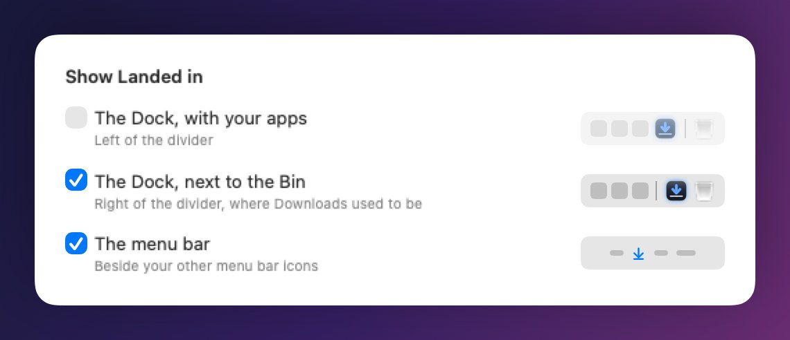
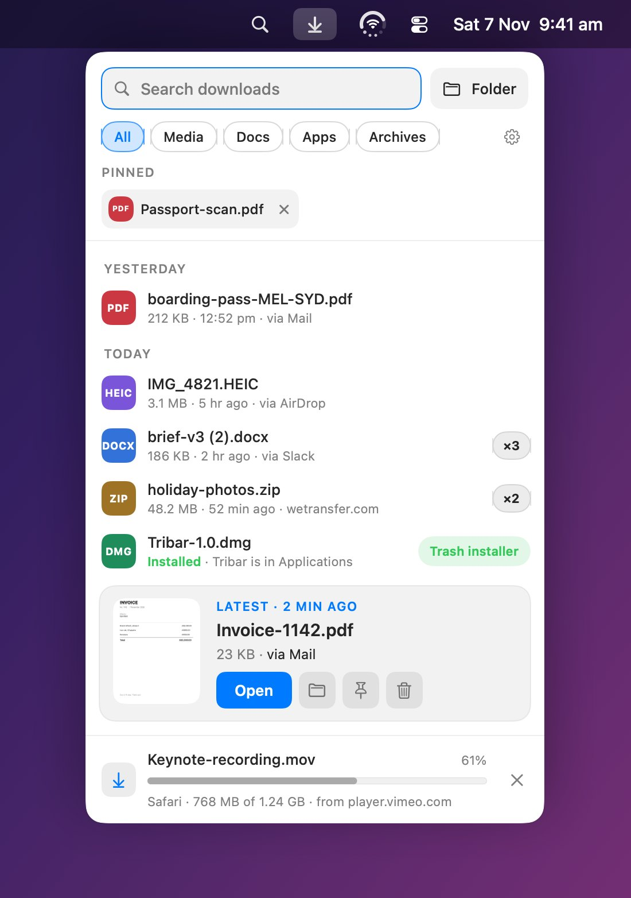
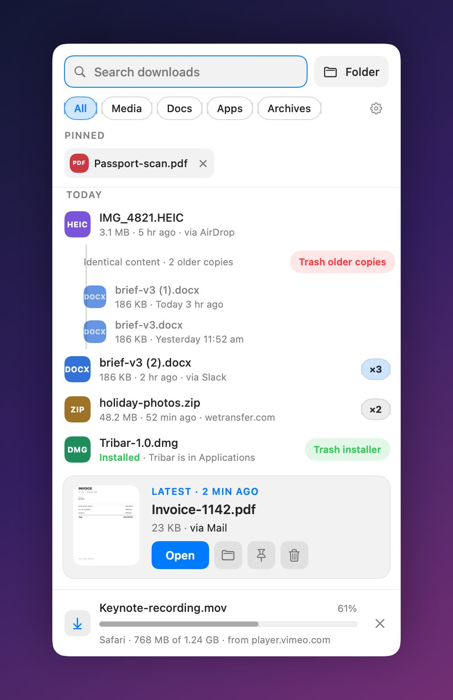
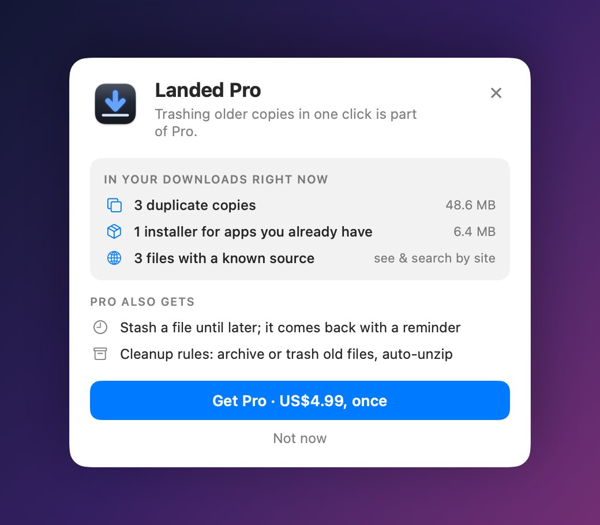

Your downloads, where your mouse already is.
Landed replaces the Dock’s Downloads stack with a shelf that opens right where you’re working. The newest file sits closest to your cursor, ready to drag into an email, a chat or an upload.
Free download. Pro unlock is a one-time purchase.

- Replaces
- The Downloads stack
- Opens from
- Dock, menu bar or ⌃⌥D
- Idle CPU
- Under 1%
- Data collected
- None
- Requires
- macOS 15 or later
- Price
- Free, Pro US$4.99 once
Press ⌃⌥D. Drag. Done.
The shelf opens beside whatever you’re working on, so attaching the file you just downloaded is one drag. Pick any shortcut you like in Settings.
Everything the stack should have been.
Click Landed beside the Bin, or press your shortcut, and the shelf opens right there.
Newest at your cursor
The latest file gets a big card with a preview. Older ones step up from there, grouped by Today and Yesterday, so nothing needs scrolling for the file you just got.
Downloads in progress
Live progress from Safari, Chrome, Edge and Firefox, showing what’s coming and where from. Changed your mind? Cancel it right from the shelf. Want a nudge when it lands? Turn on the banner in Settings.
Type to find it
Search is ready the moment the shelf opens. Filter by Media, Docs, Apps or Archives.
Keyboard first
↑ and ↓ to move, Space for Quick Look, Return to open, ⌘⌫ to trash and ⌘Z to undo.
Pins
Keep the files you always reach for in a strip at the top, out of the way of what’s new.
Trash without fear
One click, no confirm dialogs, and an Undo that puts the file back exactly where it was.
Right where Downloads used to be.
Landed sits beside the Bin, in the spot the Downloads stack had. The first time you open it, it shows you the one drag that puts it there. Or keep it with your apps, in the menu bar, or any mix.

Prefer the menu bar? So does Landed.
Tick the menu bar in Settings, with or without the Dock. Here it is in the menu bar beside Tribar, our app that puts battery, Wi-Fi and volume in one icon.

Pro cleans up after you.
Free shows you what’s piling up. Pro clears it for you, and nothing is ever deleted without you asking.


Free does the job. Pro cleans up.
Pro is one purchase, US$4.99, with nothing to renew.
| Feature | Free | Pro |
|---|---|---|
| The shelf: newest first, search, filters, Quick Look | Yes | Yes |
| Beside the Bin, with your apps, in the menu bar, or by shortcut | Yes | Yes |
| Live download progress and cancel, in Safari, Chrome, Edge and Firefox | Yes | Yes |
| Pins, Unzip, one-click trash with Undo | Yes | Yes |
| Where each file came from | Newest file | Every file, searchable |
| Identical copies, stacked | See them | Trash the older copies together |
| Installers for apps you already have | Spotted for you | Trash button on the row |
| Stash a file until later, with a reminder | – | Yes |
| Cleanup rules: archive or trash old files, auto-unzip | – | Yes |